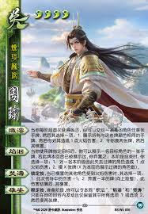
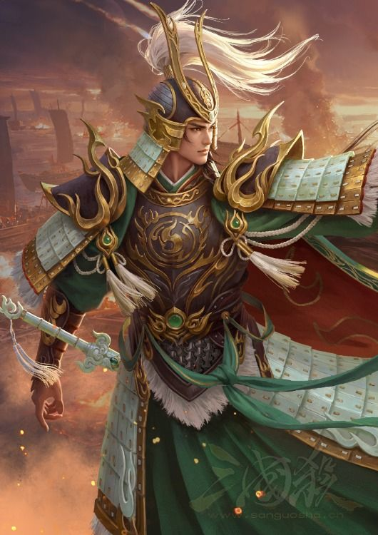

Legends of the Three Kingdoms, also known as Sanguosha, is a popular Chinese card game based on the history of the Three Kingdoms period. Players choose heroes with unique skills and use strategy to defeat their opponents. With different game modes and a wide variety of heroes, every match is exciting and offers a different experience.
Popular Mode: Identity Mode
Identity Mode is the most popular game mode in Legends ofthe Three Kingdoms. Players are randomly assigned different identities, such as Lord, Loyalist, Rebel, or Spy, and each identity has a different goal. Players must use strategy, teamwork, and their hero's skills to achieve victory.
Ruler
The Lord is the leader of the game. The Lord must work with
the Loyalists to defeat all the Rebels and the Spy while
protecting themselves from being eliminated.
Loyalist
The Loyalist supports and protects the Lord. Their goal is
to help the Lord survive and eliminate all the enemies by
working together.
Rebel
The Rebel works with other Rebels to eliminate the Lord.
Rebels must cooperate and use strategy to defeat the Lord
before being eliminated.
Traitor
The Traitor plays alone and has the most difficult role.
They must survive until the end, eliminate all other players,
and finally defeat the Lord to win the game.
Popular Models: Identity Mode
Name: Shi Weiyan(势魏延)
Kingdom: Shu Kingdom(蜀国)
Skills:
Mighty Oath (壮誓)
At the start of your Play Phase, you may either discard any number of hand cards so that the next equal number of cards you use have no distance limit and cannot be responded to, or lose any amount of HP so that the next equal number of cards you use do not count toward your usage limit.
Battle Spirit (饮战)
Locked Skill. When your Slash deals damage, if your HP is not higher than the target’s, the damage is increased by 1. If your hand size is not greater than the target’s, discard one of their cards after the Slash resolves. Momentum: Recover 1 HP and obtain the discarded card.
Loyal Pride (忠傲)
Mission Skill. You begin the game with an enhanced Mad Bone. If you defeat a character, the mission succeeds and your skill is upgraded. If you enter the Dying state or choose not to use Mighty Oath, the mission fails and you gain Determination instead.
Introduction:
1. Achieve massive burst damage by sacrificing health or discarding cards;
2. Maximize the value of using "Slash" to deal damage when you have low health and few cards in hand;
3. Eliminate characters quickly to upgrade your skills, or opt for a more cautious, long-term strategy depending on the situation;
4. Use burst damage to deal heavy blows to nearby enemies, thereby offsetting the costs incurred.
Name: God Jiangwei (神姜维)
Kingdom: Shu Kingdom (蜀国)
Skills:
Star Soul (星魂)
Once during your Play Phase, look at the top five cards of the deck, exchange any number with your hand, reorder them, then choose another character and use any Slash cards among them on that character in order.
Heavenly Tide (天涛)
Locked Skill. At the end of your turn, choose one card area and discard all cards there. Then discard one card from the same area of any number of other characters. Characters who do not discard a Slash this way lose 1 HP.
Divine Blessing (神霈)
Limited Skill. When you enter the Dying state, recover X HP (X equals the number of times you have entered Dying this game), deal the same amount of Thunder damage to one character, then gain Return to Heaven.
Return to Heaven (回天)
At the end of a character’s turn whose HP is higher than yours, you may draw a card and take an extra turn. If you used this skill during the round, you die at the start of the next round.
Introduction:
Star Soul: Exchange cards with the top of the deck, then use any Slash cards among them on a chosen target.
Heavenly Tide: At the end of your turn, discard all cards from one chosen area, then discard cards from the same area of other characters. Characters who do not discard a Slash lose 1 HP.
Divine Blessing: Recover HP and gain a new skill. The more times you enter the Dying state, the greater the benefit from this skill.
Return to Heaven:
If the conditions are met, you may take an extra turn. However, if you gain an extra turn through this skill, you will die at the specified time afterward.


Name: Shi Zhouyu (势周瑜)
Kingdom: Wei Kingdom (魏国)
Skills:
Blazing Flow (炽沄)
The first time you gain cards during each phase, you may give any number of hand cards to another character. That character chooses one:
1. Reveal all hand cards with the same colour as the given cards, then you deal 1 Fire damage to them.
2. You draw two cards, and that character becomes Chained.
Flame Return (焰洄)
After you target a character with a card, you may reveal one card from that target’s hand. If that card has already been revealed this turn, discard it. At the end of the phase, choose one:
1. Deal 1 Fire damage to a character who lost a card this way.
2. Draw X cards, where X is the number of characters whose cards were revealed this turn.
Burning Tide (焚涛)
Locked Skill. When another Chained character takes Fire damage, they must choose one:
1. Increase the transmitted Fire damage by 1.
2. Discard half of their hand cards (rounded up), then become Chained again after the damage is resolved.
Majestic Presence (雄姿)
Limited Skill. During your Preparation Phase, you may make Blazing Flow, Flame Return, and Burning Tide trigger only during your turns for the rest of the game. Then choose to keep only the first or the second effect of each skill, and draw two cards.
Introduction:
1. Give cards of different colours or less useful cards to other characters to gain the greatest advantage.
2. Reveal a target’s hand card when using a card on them, then choose the most suitable effect at the end of the phase.
3. When another Chained character takes elemental damage, they must suffer one of the negative effects.
4. Use the Limited Skill to gain an immediate benefit, then turn the optional effects of your other skills into mandatory effects.